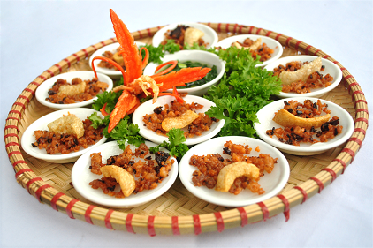

Banh Beo

Description
A bánh bèo is a Vietnamese dish that is originated from Huế, a city in Central Vietnam. The English translation for this dish is water fern cakes. Bánh bèo is made from a combination of rice flour and tapioca flour. It is popular street food in Vietnam. The ingredients include rice cake, dried shrimps, crispy pork skin, scallion oil, and dipping sauce.
Ingredients
Batter
- 2 cups rice flour
- 2 tbsp tapioca flour
- 1 tsp salt
- 4 cups water
- 1 tbsp vegetable oil
Fried Shrimp
- 2 tbsp vegetable oil
- ½ cup dried shrimp
Scallion Oil
- 2 stalks green onions
- ¼ cup vegetable oil
Dipping Sauce
- ½ cup Vietnamese dipping sauce search "nuoc cham" for recipe
Steps
- Batter: Combine rice flour, tapioca flour, and salt in a large bowl and mix. Add in the water and vegetable oil and stir well. Set aside
- Fried Shrimp: Soak dried shrimp for at least 10 minutes. Pat dry and put in a food processor. Pulse until shrimp is very fine. Heat vegetable oil. You can tell it's hot enough if you drop in a little water and it starts sizzling. Add in your shrimp and cook for 3-5 minutes. Pour out the pan over a fine mesh sieve to separate the oil from the shrimp bits. Dump the shrimp on a baking sheet with paper towels to soak up all the oil. Set aside.
- Scallion Oil: Add green onions to a small bowl. In a small sauce pan, heat vegetable oil on medium high for 2-3 minutes until it's hot. Pour hot oil over the green onions. Set aside.
- Making the Banh Beo: Get your steamer ready. Boil water and lower to a simmer. Put in your steamer insert. Fill small 3 inch dishes (dipping dishes work well) 3/4 of the way with the batter. Steam for 5 minutes until the rice cakes set. Leave the lid slightly open to let out steam and prevent the batter from boiling over. After taking them out from the steamer, let them cool for about 5-10 minutes before serving.
- Putting it all together: Put some of the fried shrimp and scallion oil on top of the rice cake and serve! Eat the Banh Beo by spooning a small amount of ngoc cham over each rice cake and enjoy!